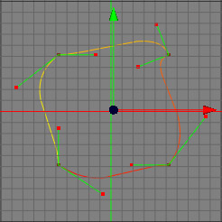

ソフトエッジツール
あなたが滑らかなスプライン曲線を作成したいのならば、ソフトエッジツールがとても役立ちます。このツールはスプライン (ベジェスプラインのみ) のコントロールポイントから伸びた接線ハンドルを変更して滑らかな曲線にします。

モード
ソフトエッジツールはすべてのモードで利用可能です。ただし、コントロールポイントと接線ハンドルが見えるのはポイントモードのみであることに注意してください。このスプラインツールは編集中のスプラインのみで使用可能です。


ソフトエッジツールを使用するには、まずはじめに選択ツールで整えたいコントロールポイントを選択しておく必要があります (訳注: コントロールポイントが何も選択されていない場合は、すべてのコントロールポイントに対して適用されます)。次に、メニューコマンドの"ツール → スプライン → ソフトエッジ" でこのコマンドを選びます。選択したコントロールポイントの接線ハンドルが変更されて滑らかなスプラインになっているはずです。
キー
-
- 無し
プロパティ
- 無し